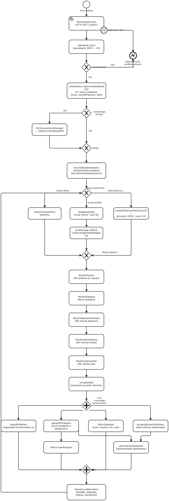
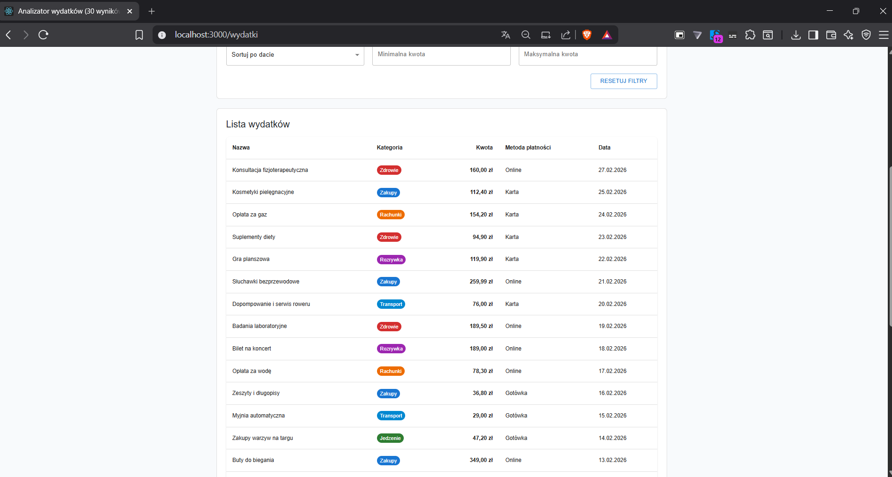
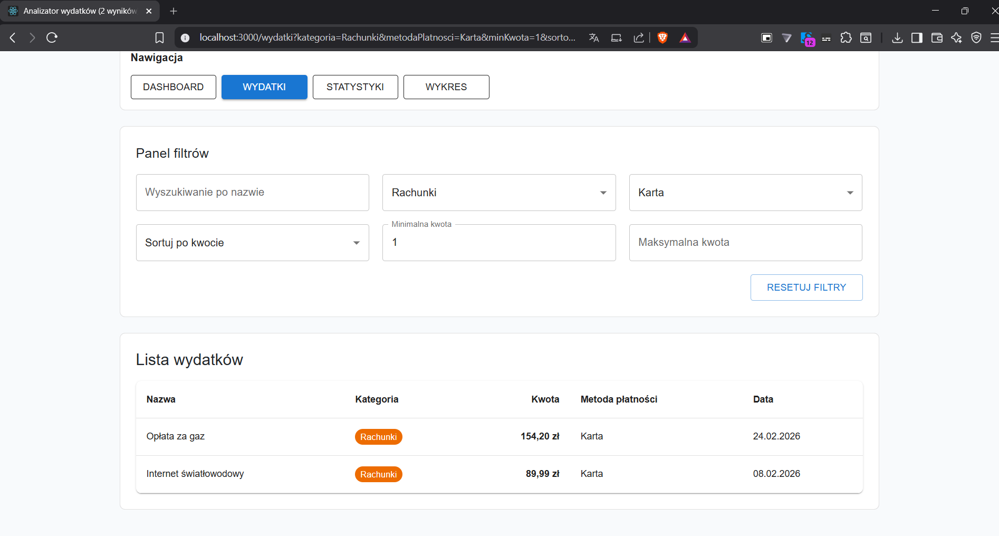
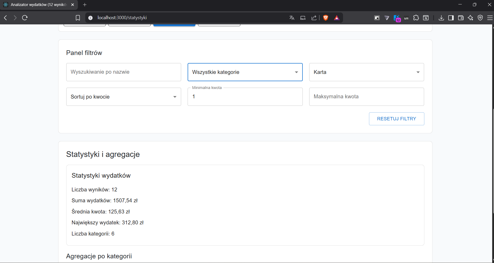
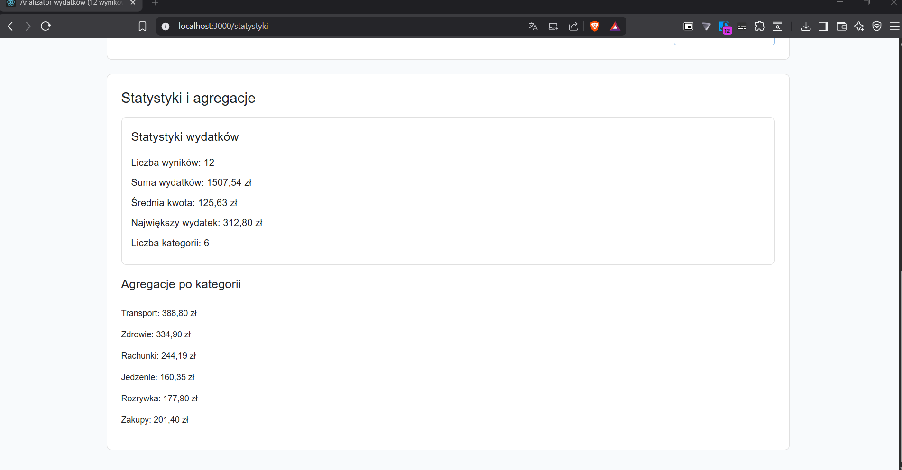
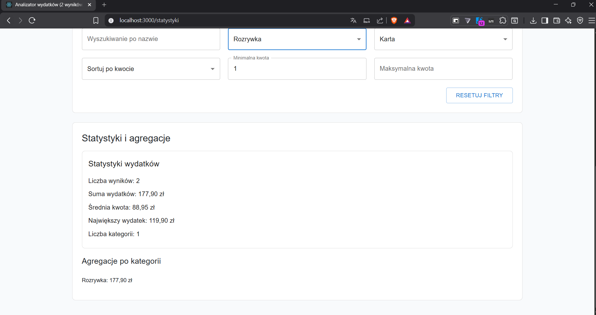
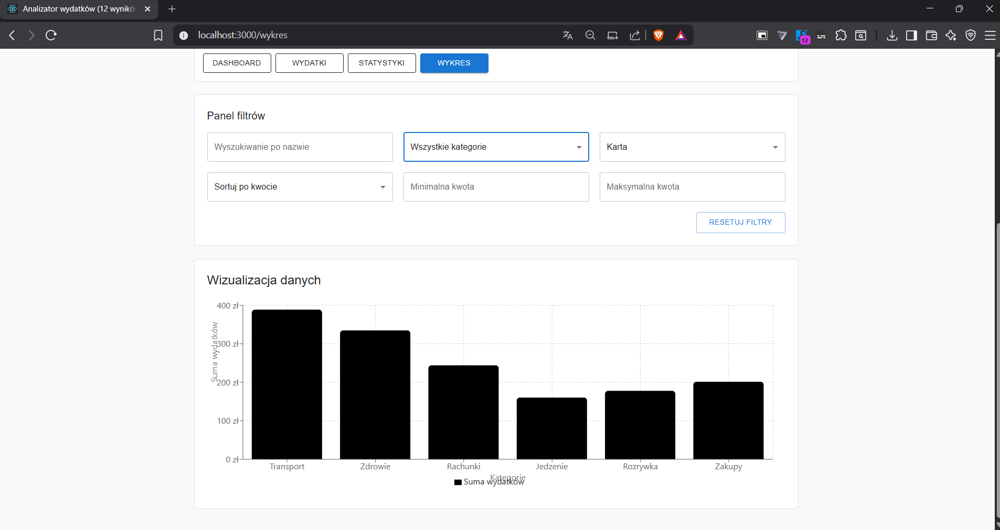
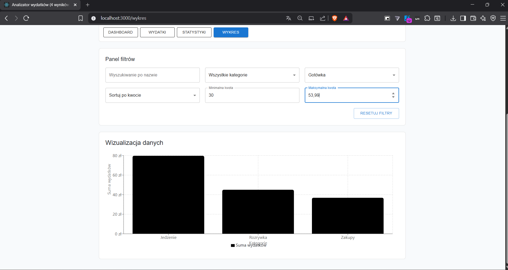
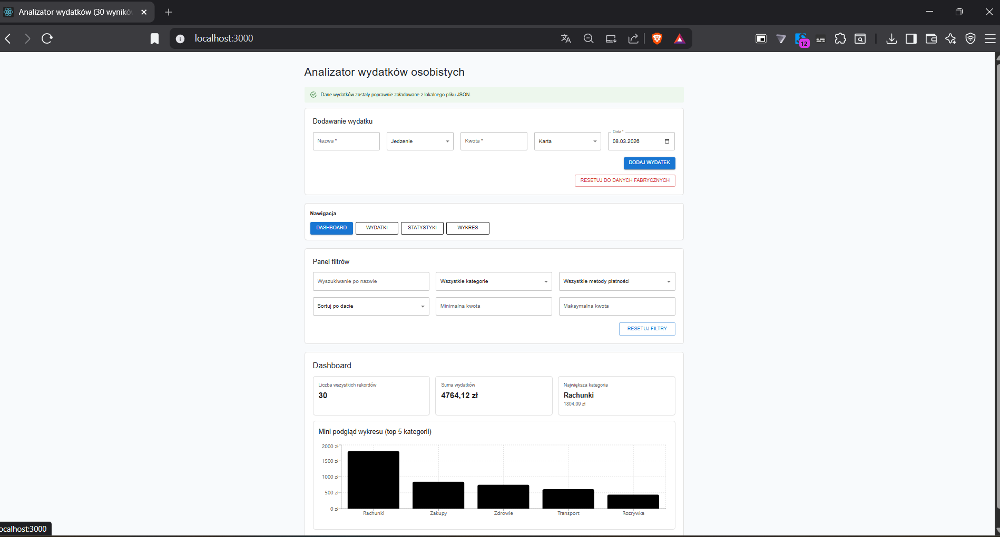
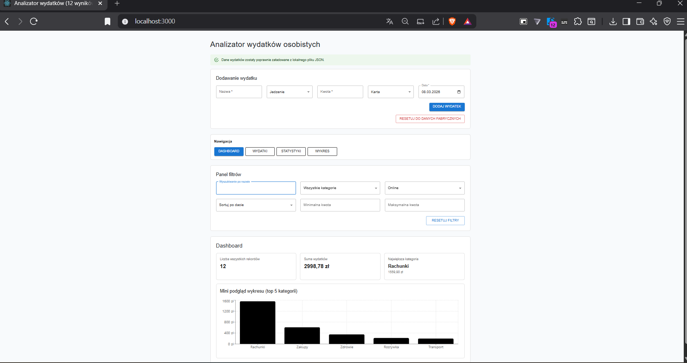

Adam Sieheń
Nr albumu: 38242
WSB Merito Gdańsk
Przedmiot: Programowanie funkcyjne w ramach różnic programowych
Aplikacja React, w której logika przetwarzania danych jest realizowana w czystych funkcjach zgodnie z zasadami programowania funkcyjnego, natomiast React pełni rolę shell'a zarządzającego stanem, routingiem i interakcją z użytkownikiem.
Autor: Adam Sieheń
Dane wydatków znajdują się w pliku public/wydatki.json. Po uruchomieniu aplikacji App.jsx pobiera je asynchronicznie przez fetch() z użyciem AbortController (obsługa anulowania). Następnie dane są:
response.json()),normalizujWydatek (uzupełnianie brakujących pól, rzutowanie typów),localStorage.Plik src/utils/pipelineWydatkow.js zawiera pipeline złożony z 12 eksportowanych czystych funkcji. Żadna z nich nie modyfikuje danych wejściowych — każda zwraca nową tablicę lub obiekt.
Sekwencja kroków pipeline (uruchomPipelineWydatkow):
| Krok | Funkcja | Rola |
|---|---|---|
| 1 | filtrujPoNazwie |
Filtrowanie po fragmencie nazwy (case-insensitive) |
| 2 | filtrujPoKategorii |
Filtrowanie po kategorii |
| 3 | filtrujPoMetodziePlatnosci |
Filtrowanie po metodzie płatności |
| 4 | filtrujPoZakresieKwot |
Filtrowanie po zakresie kwot (min/max) |
| 5 | filtrujPoZakresieDat |
Filtrowanie po zakresie dat |
| 6 | sortujWydatki |
Sortowanie po wybranym polu i kierunku |
| 7 | mapujDoWidoku |
Mapowanie na format prezentacyjny |
| 8 | agregujPoKategorii |
Agregacja sum w podziale na kategorie (reduce) |
| 9 | obliczStatystyki |
Statystyki: suma, średnia, min, max, liczba pozycji |
| 10 | przygotujDaneDoWykresu |
Dane do wykresu słupkowego (reduce → map) |
| 11 | obliczLiczbeKategorii / obliczNajwiekszaKategorie |
Metryki kategorii |
| 12 | obliczDaneDashboardu |
Kompozycja danych dashboardu z wyników kroków 8–11 |
Każda funkcja jest czysta: przyjmuje dane, zwraca nowy wynik, nie powoduje efektów ubocznych.
Komponent PanelFiltrow (src/MyComponents/AnalizatorWydatkow/PanelFiltrow.js) udostępnia 6 filtrów:
| Filtr | Typ kontrolki | Parametr URL |
|---|---|---|
| Wyszukiwanie po nazwie | TextField | nazwa |
| Kategoria | Select (Wszystkie / Jedzenie / Transport / …) | kategoria |
| Metoda płatności | Select (Wszystkie / Karta / Gotówka / Online) | metodaPlatnosci |
| Minimalna kwota | TextField (number) | minKwota |
| Maksymalna kwota | TextField (number) | maxKwota |
| Sortowanie | Select (data / kwota / nazwa) | sortowanie |
Zmiana dowolnego filtra powoduje automatyczne przeliczenie pipeline przez useMemo.
Przycisk Resetuj filtry przywraca wartości domyślne (FILTRY_POCZATKOWE).
Aplikacja składa się z następujących komponentów:
| Komponent | Plik | Rola |
|---|---|---|
| Filters | PanelFiltrow.js |
Panel filtrów i sortowania |
| Results | WynikiWydatkow.jsx |
Tabela wyników (lista wydatków) |
| Stats | StatystykiWydatkow.jsx |
Statystyki (suma, średnia, min, max, kategorie) |
| Chart | WykresWydatkow.jsx |
Wykres słupkowy (Recharts) |
| Dashboard | Dashboard.jsx |
Podsumowanie z mini-wykresem |
| Nawigacja | Nawigacja.jsx |
Pasek nawigacji (linki do widoków) |
| Dodawanie wydatku | PanelDodawaniaWydatku.js |
Formularz dodawania nowego wydatku |
App.jsx (shell) zarządza całym stanem aplikacji i przekazuje go w dół drzewa komponentów:
App → widoki (WidokWydatki, WidokStatystyki, …) → komponenty prezentacyjne — dane do wyświetlenia (wydatki, statystyki, daneWykresu, filtry, kategorie, metodyPlatnosci).App o akcjach użytkownika:
onZmianaFiltru(nazwaPola, wartosc) — zmiana jednego pola filtra,onResetujFiltry() — przywrócenie filtrów domyślnych,onDodajWydatek(nowyWydatek) — dodanie nowego wydatku do listy,onResetujFabryczne() — przywrócenie danych fabrycznych z JSON.Konfiguracja tras znajduje się w src/routing/konfiguracjaTras.js:
| Ścieżka | Widok | Opis |
|---|---|---|
/ |
WidokDashboard |
Strona główna z podsumowaniem |
/wydatki |
WidokWydatki |
Lista wydatków z filtrami |
/kategoria/:kategoria |
WidokWydatki |
Wydatki z predefiniowaną kategorią z URL |
/statystyki |
WidokStatystyki |
Panel statystyk |
/wykres |
WidokWykres |
Wykres wydatków |
Synchronizacja filtrów z URL — komponent SynchronizacjaFiltrowURL zapewnia dwukierunkową synchronizację:
/wydatki?kategoria=Rozrywka&minKwota=30 filtry ustawiają się automatycznie./wydatki?kategoria=Jedzenie&metodaPlatnosci=Karta&sortowanie=kwotaMalejaco./kategoria/Rozrywka automatycznie ustawia filtr kategorii.| Hook | Użycie w App.jsx |
|---|---|
useState |
Stan wydatków (listaWydatkow), filtrów (filtry), ładowania (czyLadowanie), błędu (bladLadowania), danych fabrycznych (daneFabryczne) |
useEffect |
Pobieranie danych z JSON (z AbortController), zapis do localStorage, synchronizacja URL ↔ filtrów (3 efekty w SynchronizacjaFiltrowURL) |
useMemo |
Wywołanie uruchomPipelineWydatkow — pipeline przelicza się wyłącznie gdy zmienią się dane lub filtry. Również: dostepneKategorie i dostepneMetodyPlatnosci |
useCallback |
Stabilne referencje callbacków: obsluzZmianeFiltru, ustawFiltryZUrl, obsluzDodanieWydatku, obsluzResetFiltrow, przywrocDaneFabryczne |
useRef |
Zapobieganie nieskończonej pętli URL ↔ State (referencja filtryRef + flaga pierwszyRender) |
useLocation, useMatch, useSearchParams |
Odczyt i zapis parametrów URL (React Router) |
Komponent WykresWydatkow renderuje wykres słupkowy za pomocą biblioteki Recharts. Dane do wykresu (daneWykresu) są obliczane przez czystą funkcję przygotujDaneDoWykresu w ramach pipeline — każda zmiana filtrów lub sortowania powoduje przeliczenie useMemo i automatyczną aktualizację wykresu.
@mui/material).WynikiWydatkow) z kolumnami: Nazwa, Kategoria, Kwota, Metoda płatności, Data.┌─────────────────────────────────────────────────────────┐
│ App.jsx (SHELL) │
│ useState / useEffect / useCallback / useRef │
│ Routing (BrowserRouter, Routes, SynchronizacjaFiltrow) │
│ fetch() → localStorage → setListaWydatkow │
├─────────────────────────────────────────────────────────┤
│ useMemo ──▶ Pipeline |
│ │
│ dane + filtry ──▶ uruchomPipelineWydatkow() ──▶ wynik│
├─────────────────────────────────────────────────────────┤
│ Komponenty prezentacyjne (props only) │
│ PanelFiltrow │ WynikiWydatkow │ Statystyki │ Wykres │
└─────────────────────────────────────────────────────────┘
App.jsx) — zarządza stanem, routingiem, efektami ubocznymi (fetch, localStorage, URL).pipelineWydatkow.js) — 12 czystych funkcji, zero efektów ubocznych, łatwe do testowania i komponowania.krok1 → krok2 → … → krok12). Łatwo dodać lub usunąć krok bez wpływu na resztę.useMemo, przeliczając pipeline tylko wtedy, gdy zmienią się dane wejściowe.Wejście: dane (JSON) + filtry (stan React)
│
├─▶ filtrujPoNazwie
├─▶ filtrujPoKategorii
├─▶ filtrujPoMetodziePlatnosci
├─▶ filtrujPoZakresieKwot
├─▶ filtrujPoZakresieDat
├─▶ sortujWydatki
│
├─▶ mapujDoWidoku ──────────▶ wydatkiDoWidoku (tabela)
├─▶ agregujPoKategorii ─────▶ agregatyKategorii
├─▶ obliczStatystyki ───────▶ statystyki
├─▶ przygotujDaneDoWykresu ─▶ daneWykresu (wykres)
└─▶ obliczDaneDashboardu ───▶ dashboard

Diagram przedstawia pełny przepływ danych w 5 fazach:
fetch(wydatki.json) → parsowanie → walidacja → normalizacja,Źródło: pipeline-wydatkow.bpmn (edytowalny w bpmn.io).
myapp/
├── public/
│ └── wydatki.json ← dane wejściowe (JSON)
├── src/
│ ├── App.jsx ← shell (stan, routing, efekty)
│ ├── App.css ← style
│ ├── utils/
│ │ ├── pipelineWydatkow.js ← 12 czystych funkcji pipeline
│ │ └── funkcjeWydatkow.js ← dodatkowe funkcje pomocnicze
│ ├── MyComponents/
│ │ ├── Nawigacja.jsx ← pasek nawigacji
│ │ ├── Dashboard.jsx ← widok dashboardu
│ │ ├── WynikiWydatkow.jsx ← tabela wyników
│ │ ├── StatystykiWydatkow.jsx ← panel statystyk
│ │ ├── WykresWydatkow.jsx ← wykres (Recharts)
│ │ └── AnalizatorWydatkow/
│ │ ├── PanelFiltrow.js ← filtry i sortowanie
│ │ └── PanelDodawaniaWydatku.js ← formularz dodawania
│ ├── widoki/
│ │ ├── WidokDashboard.jsx
│ │ ├── WidokWydatki.jsx
│ │ ├── WidokStatystyki.jsx
│ │ └── WidokWykres.jsx
│ └── routing/
│ └── konfiguracjaTras.js ← konfiguracja React Router
└── package.json
cd myapp
npm install
npm start
Aplikacja uruchomi się pod adresem http://localhost:3000.
Tabela wyników przed filtrowaniem:

Tabela wyników po filtrowaniu:
Panel statystyk:



Wykres wydatków:


Dashboard:

